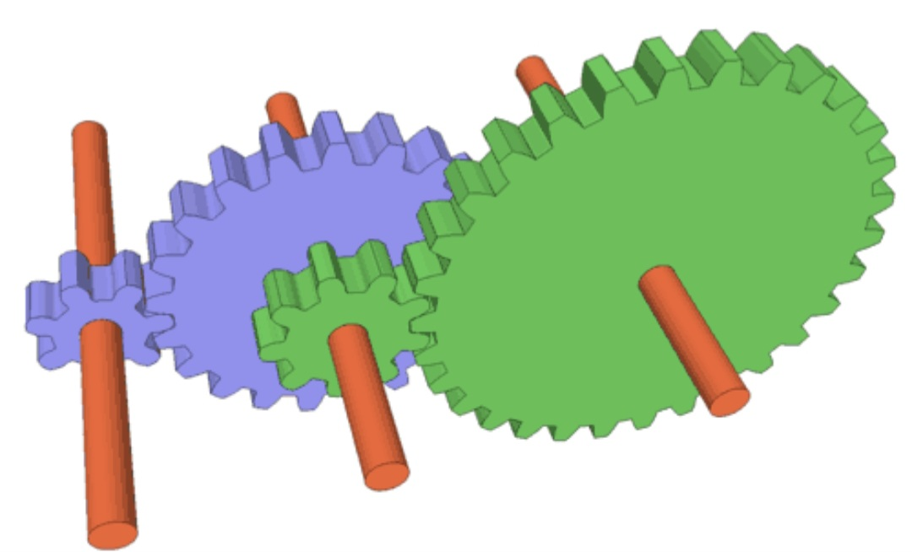

Disk Launching Robot
High school Vex robotics team project, featuring a flywheel with a 75:1 gear ratio. The disk featured in this video was printed out of PLA, so the foam disks in competition were much more aerodynamic!